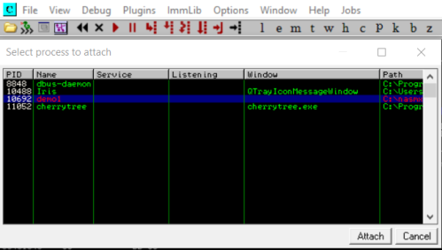

Immunity Debugger
•
Load the application: press F3
•
Input(arguments) for the application: ◇ File → Open
◇ Debug → Arguments
To make the changes effective we have to restart the application →
•
Run the application: press F9
•
Restart the application: Ctrl+F2
•
Break point: select the instruction and press F2
this stop the execution of the program as soon the program hit the instruction selected. The EIP register point at the next instruction that need to be execute
•
execute only one instruction at a time(step into): follow the execution flow into a given function call
press F7
•
execute only one instruction at a time (step over): execute the entire function and return from it (without inspect the function itself)
press F8
•
See in the stack a register: •
Attach Immunity to a process application in background and inspect it(instead of open one): •
search for a string:
◇
show references
◇ right click → search for → All referenced text string
this give us all the string defined in the program
double clicking on the string of our interest we directly jump on the disassembled section of the program where the string is defined
{kind=link}
{kind=link}
{kind=link}